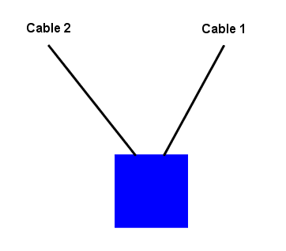
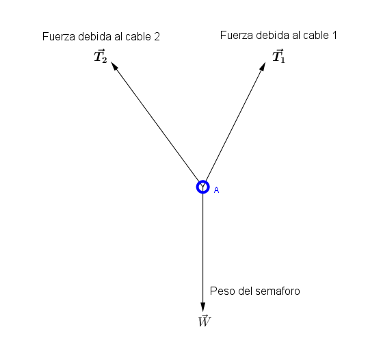
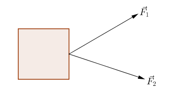
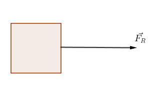
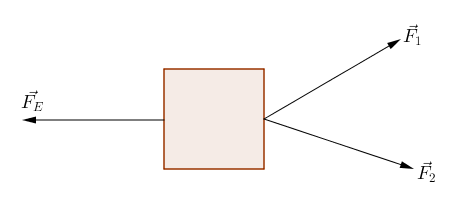
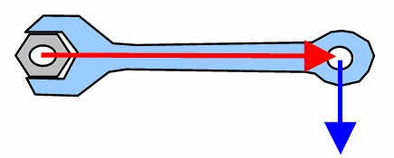
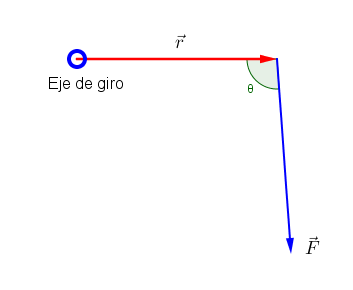
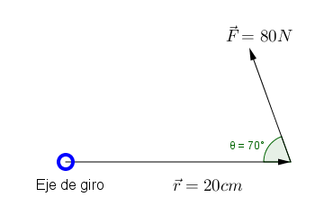
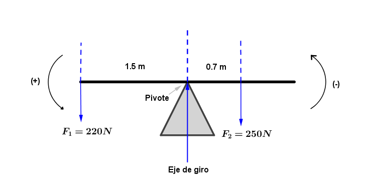

Estática
Estudia a los cuerpos en equilibrio
Equilibrio
Un cuerpo está en equilibrio si su aceleración es igual a cero o si la suma de todas las fuerzas
externas que actúan sobre él es igual a cero
Equilibrio estático
Cuando el cuerpo permanece en reposo
Equilibrio dinámico
Cuando un cuerpo tiene un movimiento rectilíneo uniforme
Equilibrio de una partícula
Se desprecian las dimensiones del cuerpo en estudio y se considera como una partícula


Condición de equilibrio
Una partícula está en equilibrio cuando la suma vectorial de todas las fuerzas que actúan sobre ellas es
igual a cero
$$\Sigma\overrightarrow{F_{n}} = 0$$
$$\overrightarrow{F_{1}} + \overrightarrow{F_{2}} + \overrightarrow{F_{3}} + \ldots +
\overrightarrow{F_{N}} = 0$$ $$\sum_{i = 1}^{N}{\overrightarrow{F_{i}} = 0}$$
En función de componentes rectangulares de las fuerzas:
$$\sum F_{x}=0$$ $$\sum F_{y}=0$$
Una persona que pesa 800 N descansa sobre una hamaca. La cuerda cercana a la cabeza de la persona hace un
ángulo α de 25° con la horizontal, mientras que la cuerda que se encuentra en los pies hace un ángulo θ
de 40° con la horizontal. Determina la magnitud de las tensiones que ejercen las cuerdas
Fuerza resultante y fuerza equilibrante
Se calcula la fuerza resultante para determinar la fuerza que se debe aplicar para mantener el cuerpo en
equilibrio
Para obtener la equilibrante, se utiliza la resultante pero con sentido contrario



Torque o Momento de fuerza
Cantidad de fuerza aplicada para producir una rotación en el cuerpo de estudio
$$\tau$$


$$\tau = rF\sin\theta$$
Cuya unidad es el Newton-Metro (Nm)
Un técnico ejerce una fuerza de 80N en el extremo de una llave inglesa de 20cm. Si esta fuerza forma una
ángulo de 70° con el mango de la llave, ¿Cuál es la magnitud del momento de fuerza producido en la
tuerca?

Momento de fuerza resultante
Se obtiene al sumar algebraicamente los momentos de fuerza positivos y negativos debidos a cada fuerza
$$\tau_{R} = \sum \tau$$
Determina el momento de fuerza resultante sobre un sube y baja, si uno de los niños pesa 250N y se
encuentra a 0.70m del eje de giro. El otro niño pesa 220N y se encuentra a 1.5 m del eje de giro.

Par de Fuerzas
Si se aplican dos fuerzas en puntos diferentes de un cuerpo, de manera que sus líneas de acción sean
paralelas, el cuerpo girara
$$\tau = Fd$$
Donde:
$$F = magnitud\ de\ las\ fuerzas\ actuantes\ en\ el\ par$$
$$d = distancia\ entre\ las\ dos\ fuerzas$$
Sobre un volante de 60cm de diámetro se aplica un par de fuerzas. La magnitud de las fuerzas aplicadas
es de 30N. ¿Cuál es la magnitud del momento de fuerza resultante?